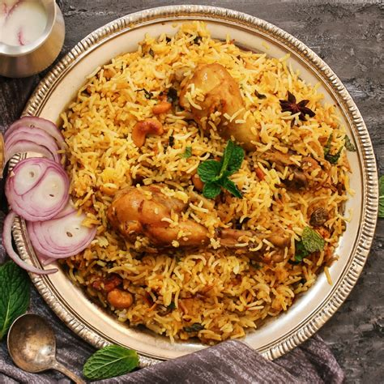

Back
Hydrabadi Biriyani

Description
One of the most well-known Indian dishes made. A spicy Chicken Biriyani
Ingredients
- 2 tablespoon sessional oil
- 3 tablespoon plain yogurt
- 2 tablespoon distiled white vinegar
- 1 medium onion, sliced
- 2 cloved garlic, crushed
- 1 tablespoon ginger paste
- 2 small green chile peppers
- 2 medium tomatoes, chopped
- 2 tablespoon garam mashala
- 1 tablespoon dried mint
- salt and pepper to taste
- 1 whoole chicken cut into pieces
- 2 quarts water
- 1 bay lief
- 4 pods green cardamom
- 1 pod black cardamom
- salt to taste
- half tablespoon powedered turmeric
- 1 chinamon stick
- 4 cup uncooked Basmati Rice
Steps
- Heat the olive oil in a large skillet over medium heat. Mix in the yogurt and vinegar. Place the onion in the skillet, and cook until tender. Mix in the garlic, ginger paste, green chile peppers, and tomatoes. Cook and stir until tomatoes are tender. Season with garam masala, mint, salt, and pepper, and mix in the cilantro.
- Place the chicken in the skillet. Reduce heat to medium-low, cover, and continue cooking 45 minutes, stirring occasionally, until chicken juices run clear.
- Bring the water and rice to a boil in a large pot. Mix in the bay leaf, green cardamom, black cardamom, and cinnamon. Season with salt to taste. Cover, reduce heat to low, and simmer 20 minutes.
- In a separate pot, alternate the rice and chicken mixture in layers, topping with rice. Sprinkle with the food coloring, and mix to serve.
Nutrition Facts
- 400 calories
- 16 gm protien
- 55 gm carbohydrate
- 11 gm fat
- 31 mg colestrole
- 43 gm sodium